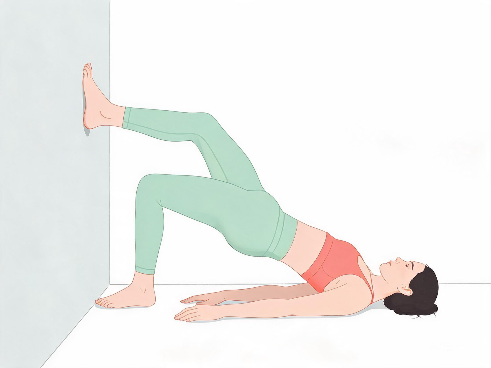
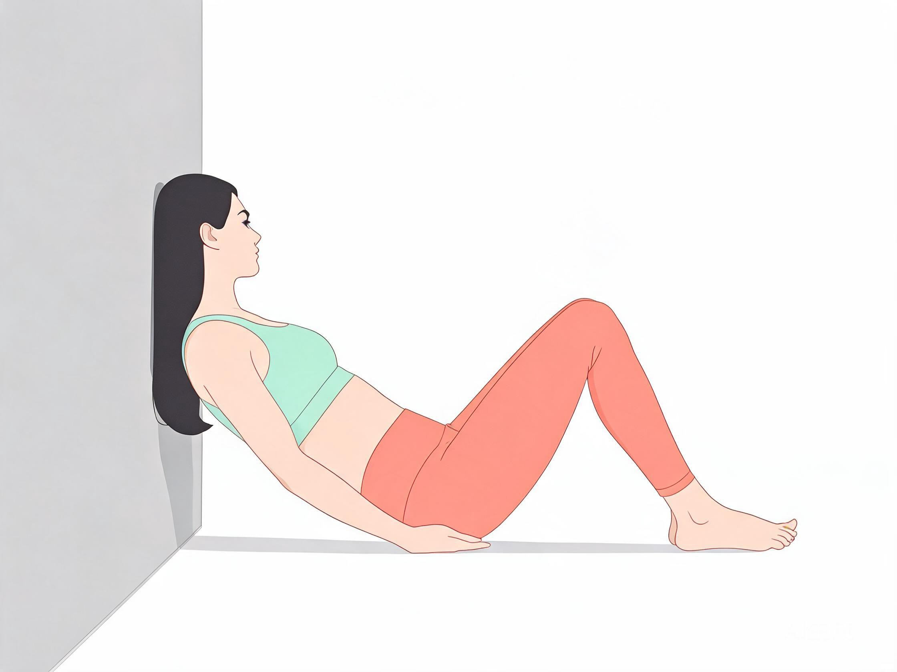
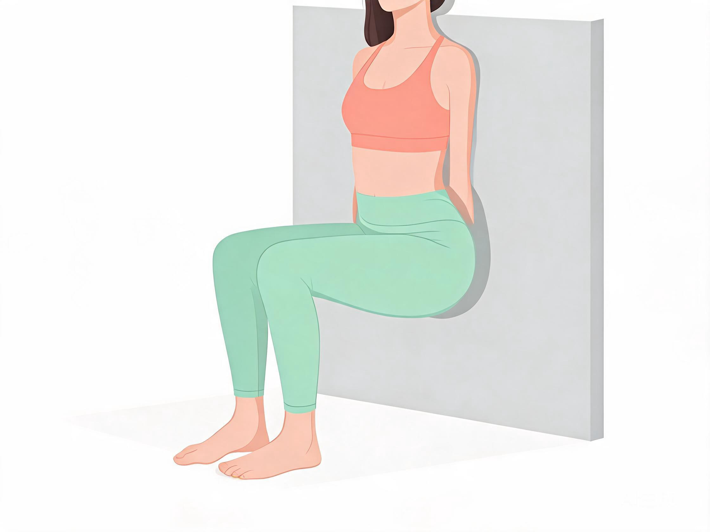
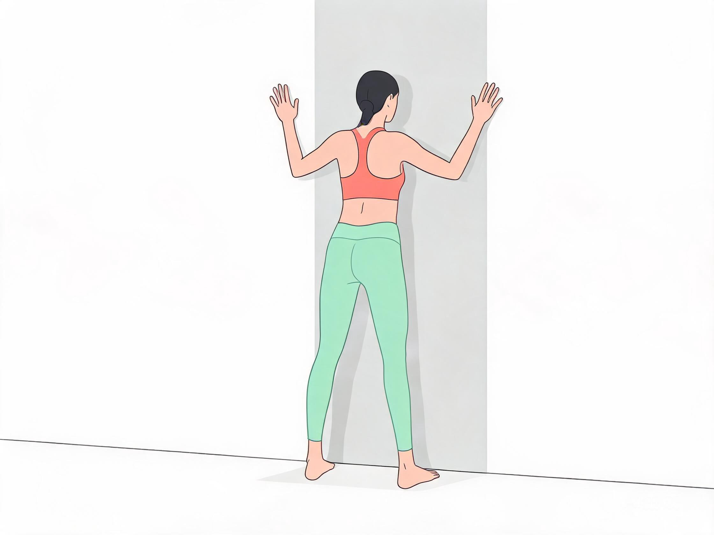
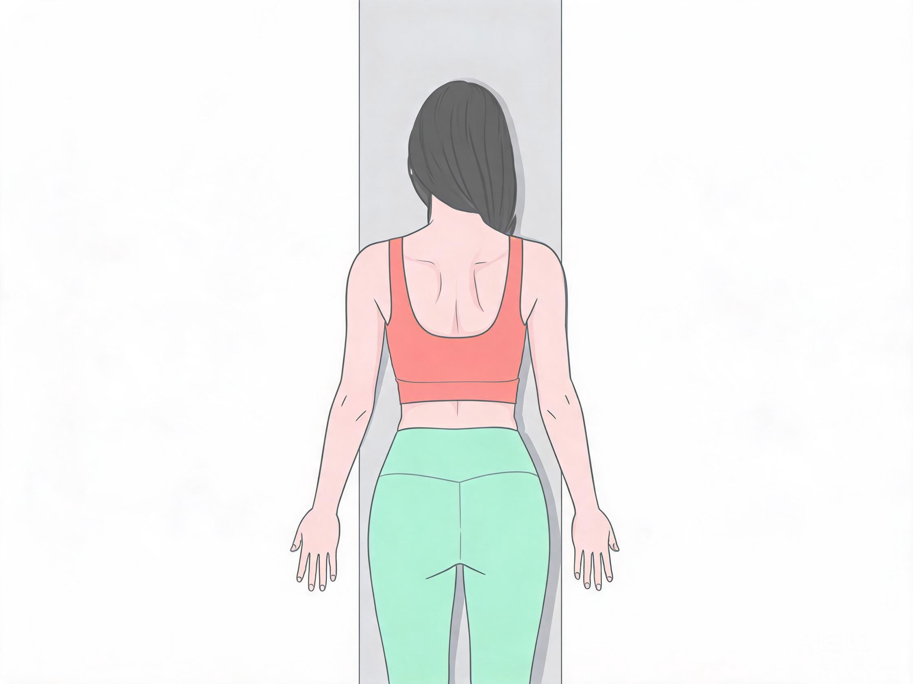
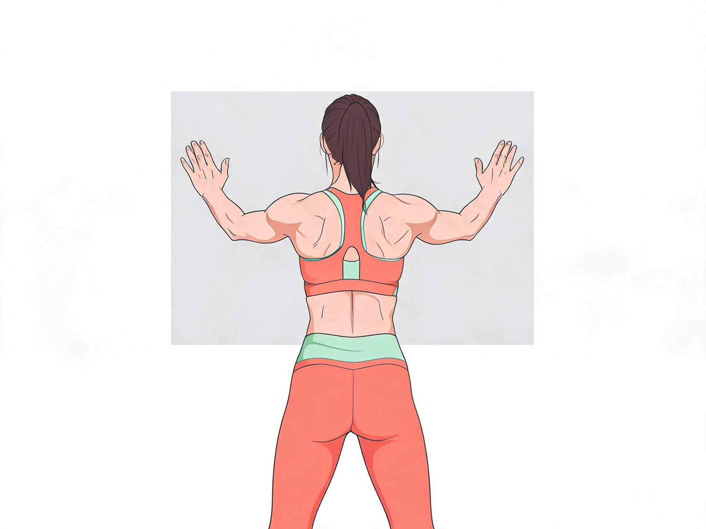

这套训练只需一面墙，无需任何器械，适合居家日常锻炼。可以单独练习，也可以接在5分钟靠墙静蹲后面作为完整训练。
整套分为两部分：靠墙练臀（改善扁平臀、假胯宽，稳定膝盖）和靠墙练后背（改善圆肩驼背、薄背、放松上背），共约10分钟。
6
个动作
10
分钟
0
器械
一面墙
所需场地
🍑
一、靠墙练臀部

1. 墙面臀桥
王牌动作 · 刺激臀大肌 · 改善扁平臀
后背贴墙，屈膝踩地，脚掌全落地，脚距与肩同宽。收紧臀部向上顶，腰不拱，肩背始终贴墙，顶峰停2秒。
12 次 × 3 组 | 组间休 30 秒
- 发力感集中在臀部，不要用腰代偿
- 顶起时膝盖和脚尖同向
- 腰不拱起，只靠臀部发力

2. 靠墙蚌式
臀中肌训练 · 改善假胯宽 · 纠正膝盖内扣
侧对墙面，上背轻贴墙，双腿屈膝并拢，脚跟贴紧。上方膝盖像贝壳一样打开，骨盆不动，顶峰停1秒。开合幅度控制在45度以内。
15 次 × 2 组 / 侧 | 组间休 30 秒
- 骨盆不前后扭，后脑勺、肋骨、臀部全程贴墙
- 双脚脚跟不分开，只用臀部外侧发力
- 骨盆往后翻、后背离墙 = 腰部代偿，练完腰酸

3. 靠墙静蹲夹臀
同步练臀 + 腿 · 翘臀效果翻倍
保持标准靠墙蹲姿势，全程用力夹紧臀部，收紧盆底肌。骨盆微微后卷贴墙，不要塌腰。膝盖中间可夹枕头，臀外侧发力更明显。
40 秒 / 组 | 比普通静蹲翘臀效果翻倍
- 下蹲全程刻意夹紧臀部，骨盆微微后卷贴墙
- 不要塌腰，膝盖中间可夹枕头增加难度
- 膝盖不超过脚尖，腰不贴墙时立即减小幅度
🦋
二、靠墙练后背

4. 墙面天使
改善含胸驼背 · 练中背部 · 收紧肩胛骨
后脑勺、上背、臀部完全贴墙，手臂弯曲90度贴墙成W型。缓慢沿墙面向上滑到头顶，再缓慢下落，全程手肘、手背不离墙。
10 次 × 3 组 | 沉肩不耸肩
- 脚离墙半脚掌，全程沉肩，不耸肩发力
- 发力感在后背中间肩胛骨位置
- 后脑勺、背、屁股全程贴墙，杜绝圆肩

5. 靠墙肩胛骨后收
强化菱形肌 · 薄背显直角肩 · 久坐必备
贴墙站立，双臂自然下垂。双肩向后向下夹紧，肩胛骨往中间挤，感受后背中间收紧，保持5秒放松。想象肩胛骨中间夹一支笔。
15 次 × 3 组 | 组间休 30 秒
- 后脑勺、上背、臀部全程贴紧墙面
- 正确感受：后背中间（肩胛骨缝）酸胀
- 禁止耸肩、抬肩膀；禁止只用手臂向后掰

6. 靠墙超人
中下背训练 · 改善久坐腰酸
腹部微收贴墙，双脚站稳，双手向前平举。手臂向后打开贴墙面，胸口微挺，后背收紧，停留3秒。
12 次 × 3 组 | 停留 3 秒
- 腹部微收贴墙，不要塌腰
- 发力在后背，不在脖子
- 脖子不酸才算正确，腰背刺痛立即减小幅度
📋
完整 10 分钟组合流程
以下为靠墙蹲 + 背臀一体的完整训练顺序，可接在5分钟靠墙静蹲后面做，也可独立完成。
0:00 – 0:30
热身
活动肩、髋、膝盖关节，让身体微微发热
0:30 – 5:30
靠墙静蹲（护膝 + 夹臀）
标准靠墙蹲5分钟，全程刻意夹紧臀部，骨盆微微后卷贴墙
5:30 – 8:30
臀部训练（3分钟）
墙面臀桥 3组 → 靠墙蚌式 2组/侧
8:30 – 9:30
背部训练（1.5分钟）
墙面天使 3组 → 肩胛骨后收 3组
9:30 – 10:00
拉伸放松
拉伸胸肌、大腿前侧、臀部，每组保持15-20秒
💡
关键要点
练背核心原则
- 全程后脑勺、背、屁股贴墙，杜绝圆肩
- 发力在后背中间，不是脖子
- 想象肩胛骨中间夹一支笔，全程沉肩
练臀核心原则
- 夹紧臀部、骨盆摆正，腰部不要发力顶起
- 膝盖和脚尖同向，膝盖不内扣
- 脚跟发力，不是脚尖发力
安全提醒
- 酸胀是正常的肌肉反应，继续练习即可
- 腰背、膝盖出现刺痛，立刻减小动作幅度
- 如果持续疼痛，停止训练并咨询专业教练